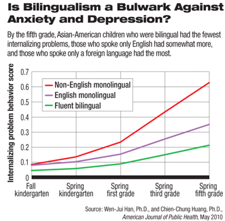
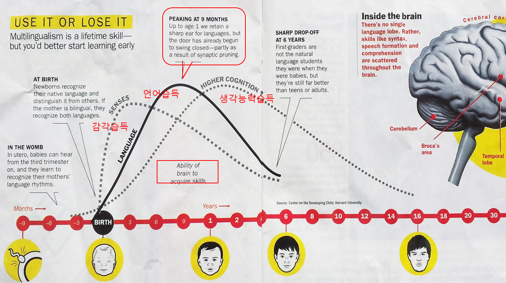
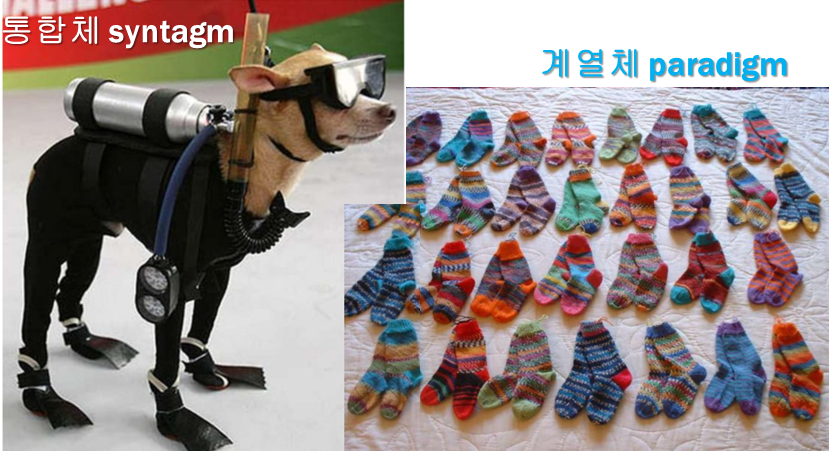
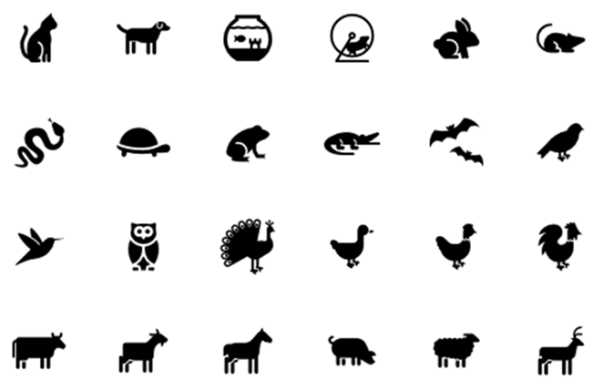
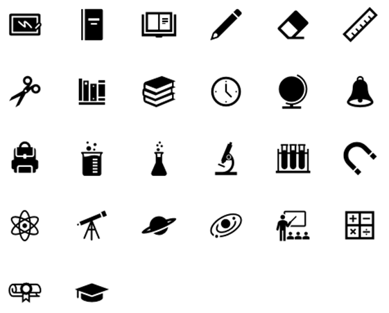
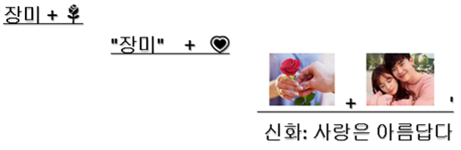

언어와 기호학
- 언어
- 동아시아 근대어
- 기호학
- 소쉬르
- 바스
- 레비스트로스
언어
언어
- 언어
인간이 소통하는 방법 체계적이고 관습적인 방식으로 단어를 사용한다 말 또는 글을 이용한다 인류적 차원에서 언어 (언어), 또는 개별 국가나 집단 차원에서 언어 (한국어)
- 인공어
인간이 사용해왔던 자연어에 대응하는 개념 수학, 컴퓨터 언어 등
- 언어의 기원
30만 년 전에 인간의 목 구조가 언어에 맞게 진화 목의 후강이 내려앉아서 자음 발성이 가능 언어 발생이 15만 년 전~5만 년 전으로 추정 몸의 해부학적 구조뿐 아니라 두뇌의 기능도 진화해야 한다 언어 유전인자(Foxp2)는 10만 년 전에 진화의 과정에 있었다.
언어의 계통적 분류
- 인도유럽어족
게르만어 (영어), 라틴어, 슬라브어, 이란어, 힌두어
- 우랄알타이어족
우랄어족: 핀란드어, 헝가리어, 에스토니아어
알타이어족: 한국어 , 일본어, 몽골어, 카자흐스탄어, 터키어
- 중국티베트어족
중국어, 티베트어, 미얀마어, 부탄, 네팔
태국 (크라다이어족?)
- 오스트로아시아어족
베트남어, 크메르어
- 아프로아시아어족
아랍어, 차드어, 베르베르어(사하라 부족)
- 오스트로네시어어족
말레이시아어, 인도네시아어, 마다카스카르섬
- 이 외에도 여러 어족들이 존재한다.
언어 중추
- 좌뇌와 우뇌
브로카와 베르니케는 좌뇌에 위치한다 우뇌는 이야기를 이해하고 추론하는 기능, 의미의 연합을 활성화
- 베르니케 Wernicke
말을 이해한다. 물리적 음성의 청각 정보를 의미를 지닌 정보로 바꾸는 역할을 한다. 다치면 말은 유창하게 하지만 의미 없는 틀린 말을 하거나 다른 사람 말을 이해하지 못한다.
- 브로카 Broca
조음기관 근육을 움직여 말을 만든다. 통사론적 지식과 관련이 있어 말의 이해와 관련 있다.
그림
언어의 기본 지식
인간은 말하는 본능을 지녔다. 갓난아기들도 옹알거린다.
모든 인간 사회는 언어를 가진다.
문화적 산물? 아니다. 한 세대만에 언어를 만든다 예: pidgin -> creole (creolization) 니카라구아 수화, 농아 어린이 수화
모든 인간은 언어를 가진다.
언어는 창조적이다
전혀 들어본 적이 없는 문장을 만든다. 거의 무한정한 문장을 만들 수 있다.
그들이 거짓말을 한다는 걸 우리가 아는 걸 그들이 안다는 걸 우리는 안다. - Gorokhova (2010)
- 인간은 문장을 직관적으로 이해한다.
돼지는 먹기에 열심이다. The pig is eager to eat. 돼지는 먹기에 좋다. The pig is easy to eat.
- 음성 언어에서 단어 사이의 간격은 없다
말할 때 단어 사이의 쉼을 인식하는 건 심리적이다.
- 못 들은 것은 시간적으로 나중에 이해를 하지만 실시간으로 이해했다고 오해한다.
나는 어제 –삐-을 가서 영화를 봤어. (“극장”을 들었다고 오해한다)
Top-down 방식
언어 소통의특성
언어는 추상적이다
언어는 단순화의 오류를 만든다
언어는 차별성이 부족하다
언어는 사실과 추론을 혼동하게 한다
언어는 편견과 선입견을 가져온다
언어는 환원적이다 (한 부분이 전체로 보이게 한다)
- 이중 언어
이중 언어 습득자는 불안과 우울이 적다

이중 언어는 뇌간을 활성화한다
그림: 대뇌 피질
- 이중 언어 습득은 생후 9달이 최고점
뇌가 세 가지 기술을 습득하는 효율성 곡선

동아시아 근대어
근대어와 서양의 영향
현대 한국어는 수많은 한자 단어를 가진다. 흔히 이것이 모두 예전부터 중국과 교류하면서 유입된 어휘로 생각하는 경향이 있다. 그렇지 않다. 현재 한국과 중국, 일본 등 동아시아에서 사용하는 한자어 중에 많은 것들이 중국에서 유래한 것이 아니라 일본에서 새로 만든 신조어들이다. 일부는 근대 중국에서 먼저 생겨 일본에 갔다가 역수입한 것도 있고 원래 있던 중국 용어가 뜻이 변한 것도 있기는 하지만, 그런 경우는 수가 적다. 일본이 서양 학문과 문물을 받아들이는 과정에서 번역을 통해 만든 신조어들이다. 말하자면, 겉은 한자어로 보이지만 속은 서양 개념을 가진, 무늬만 동양이고 본질은 서양인 어휘들이다.
예를 들어, 경제는 서양의 economy 를 번역하며 만든 신조어며 원래 중국을 중심으로 한 전통적 동아시아 문화권에서 사용하지 않은 개념이다. “경제”가 중국의 고전에 나타나는 “경세제민”을 두 자로 줄여 만든 용어인 것은 사실이지만, 그렇다고 해서 그 뜻을 “세상을 경영하고 백성을 구제한다”로 풀이하는 것은 역사에 무지한 해석이다. 용어로서 경제는 그 의미가 “경세제민”과 직접적 관계는 없고 단지 economy를 번역하려고 새로 만든 것이니 그 뜻과 뿌리는 서양 용어 economy 에서 찾아야 한다. 동물원에서 기린을 보며 그것을 중국 상상 속의 성스런 동물이라고 알려주는 것은 바른 방향이 아니다. 단지 모습이 좀 닮은 듯해서 이름을 빌려온 것뿐이며, 기린과 giraffe는 연관이 없기 때문이다.
현대 동아시아의 한국, 중국,일본 등에서 자주 사용하는 한자어가 뿌리를 서양 용어와 개념에 두는 것은 문화의 교류에서 자연스러운 것이고 수치스러운 것도 아니다. 현재 가장 영향력이 강한 언어는 영어지만, 영어 어휘가 전부 앵글로색슨 계열의 어휘는 아니다. 오히려 라틴어와 프랑스어에서 온 어휘들이 아주 많다. 또 라틴어도 수많은 어휘들이 그리스어에서 유래한다. 예를 들어, 잘 알려진 것처럼 로마의 신들은, 이름은 다르지만, 거의 전부가 그리스 신들을 그대로 가져왔다. 주피터는 제우스이며 주노는 헤라 등으로 일대일로 대응한다. 그렇다고 해서 아무도 로마 문화를 폄하하지 않는다. 그리스 문화도 이집트와 메소포타미아 문화의 영향을 받았다. 문화는 서로 영향을 주고 받는 게 당연하고 주고받는 방향도 늘 바뀌어 왔다.
| 지위/의미 | 로마 신 | 그리스 신 |
|---|---|---|
| 최고 신 | 주피터 | 제우스 |
| 최고 신의 아내 | 주노 | 헤라 |
| 저승 신 | 플루토 | 하데스 |
| 바다 신 | 넵툰 | 포세이돈 |
| 지혜 신 | 아테나 | 미네르바 |
| 아름다움 신 | 비너스 | 아프로디테 |
| 전령 신 | 머큐리 | 헤르메스 |
일본 난학의 번역어
근대 일본에서 만든 번역 신조어는 대개 기원을 난학에서 찾는다. 난학의 ’난’은 네덜란드를 말한다. 근대 일본도 쇄국 정책을 펼치긴 했으나 네덜란드와 교역만은 열어두었으며 그 통로를 통해 서양 문물이 들어왔기 때문이다.
일본 규슈 남단 다네가 섬에 1543년 8월 포르투갈인과 명나라 학자 등이 배로 도착하여 일본이 서양 문명과 본격적으로 접촉하게 되는데 이때부터 포르투갈과 스페인 등에서 전해진 서양 학문을 남만학이라고 했다. 남쪽 오랑캐의 학문이라는 뜻이다. 1604년 일본-포르투갈어 사전이 간행되었다. 한때 활발하였으나 에도 막부가 기독교 포교를 금지하고 탄압하면서 점차 쇠퇴하였다.
네덜란드의 진출은 1600년 네덜란드 상선이 일본 규슈 서쪽 우스키에 도착하며 시작했다고 한다. 네덜란드의 학문을 난학으로 불렀는데, 점차 의미가 확대하여 네덜란드를 통하여 들어온 서양 학문을 총칭하는 용어가 되었다. 일본의 에도 막부는 1635년부터 네덜란드하고만 교역하였으며 1641년부터 규슈 나가사키 한 곳을 통해서 독점적으로 교역하였다.
서양 학문을 공부하는 난학에서 어려움 중 하나는 서양 용어에 해당하는 마땅한 일본어가 없어서 서양 책을 번역하기 어렵다는 점이었다. 그런 점에서 “해체신서”는 중요한 이정표라고 하겠다. “해체신서”는 1722년 독일에서 편찬한 “Anatomische Tabellen”의 네덜란드어 번역본인 “Ontleedkundige Tafelen”을 일본이 번역하여 1774년에 출판한 것이다.
“해체신서” 번역은 료타쿠가 주도적이었으나 여럿이 공동 작업으로 번역을 하였다. 네덜란드어 의학 용어를 알기도 어려웠고 그걸 마땅한 일본어로 번역하는 건 더 어려운 일이었기에 여럿이 모여 논의하며 작업했다고 한다.
번역을 하며 세 가지 상황에 따른 세 개의 번역 지침이 있었다.
- 번역: 네덜란드어에 대응하는 일본어가 있을 때 대응하는 용어로 번역하는 것.
- 의역 (직역): 네덜란드어에 해당하는 마땅한 일본어가 없을 때 그 뜻을 살펴서 새 용어를 만들어 사용하는 것.
- 음역: 네덜란드어에 해당하는 일본어도 없고 그 뜻을 풀이하기도 어려울 때 그냥 소리대로 적는 것.
1번과 3번은 그대로 번역을 진행하면 되는데 2번은 신조어를 만들어야 하므로 꽤 고민이 있었을 것이다. 아래는 “해체신서”를 번역하며 2번 지침에 따라 신조어를 만든 예 몇 개를 든 것이다.
| 번역어 | | | 생성 과정 |
|---|---|---|
| 신경 | | | zenuw의 번역. 정신을 뜻하는 “신기”와 경로를 뜻하는 “경맥”의 앞 글자를 땄다. |
| 연골 | | | kraakbeen의 번역. 부드러운 뼈라는 의미라서 “연골”이라는 단어를 만들었다. |
| 십이지장 | | | duodenum의 번역. 손가락 열두 개 정도의 길이의 장이라는 뜻. duodenum은 12의 뜻. |
| 문맥 | | | poorader의 번역. 문정맥이라는 정맥의 일종. 피가 출입하는 문 역할의 의미로 “문맥”을 만들었다. |
| 맹장 | | | blindedarm의 번역. 눈먼의 blind와 장의 darm이 이룬 단어이므로 “맹장”을 만들었다. |
이 당시에 만든 새 의학용어가 현재도 계속 사용되는 것을 보면 이 번역 작업은 대단한 업적이다. Blindedarm은 네덜란드어로 “부착물”을 뜻하는 단어며 위의 blind가 “눈먼”을 의미한다는 것은 오해에서 비롯한 듯하다 (저자 의견). 맹장은 신조어 생성 과정의 오류가 있는 것인데 아직 그 용어를 그대로 사용하는 걸 보면 이 당시 번역 작업이 현대 용어에 미치는 영향력을 알 수 있다.
1811년에 에도 막부는 천문방 안에 만서화해어용이라는 (오랑캐 책을 일본어로 번역한다는 뜻) 네덜란드 서적 번역 기관을 설치하였다. 후에 양학소, 번서조소, 양서조소, 개성소 등으로 이름을 바꾸었지만 여전히 유지하였다.
번서조소에서 근무했던 니시 아마네는 여러 사람과 “메이로쿠 잡지”를 발간하고 이를 통해 많은 번역어를 만들어냈다. 이런 번역 신조어를 “화제한어”라 부르는데 “일본인이 만든 한자어”란 뜻이다. 1868년의 메이지 유신 이후 서양의 계몽사상이 일본에 들어왔는데 이때 활약한 대표적 인물이 니시 아마데 등이다. 이들이 서양의 사상과 문물을 받아들이면서 많은 번역어를 만들어냈다.
니시 아마네가 만든 번역 신조어는 아래와 같은 것들이 있다.
철학 philosophy 예술 art 과학 science 기술 technology 의식 consciousness 심리학 psychology 지식 knowledge 개념 concept 연역 deduction 귀납 induction 정의 definition 명제 proposition 공간 space 시간 time 관념 idea 긍정 affirmative 부정 negative 능력 faculty 도덕 moral 본능 instinct 외연 extension 원리 principle 의무 obligation 자기의식 self-consciousness 이상 ideal 이성 reason 정서 emotion 주관 subjective 직관 intuition 추상 abstract 구체 concrete 현상 phenomenon 감성 개연 고통 관능 관찰 권리 근세 동일 반증 분류 사고 사실 상념 세포 속성 어원 운용 인상 제한 주의 체험 충동 합성 헌법 확증
(출처: 홍성준 (2019), p.68, 양세욱 (2006), p.53)
그 외에 1884년 일본 “개정증보 철학자휘”에 실린 번역 신조어를 보면 아래와 같다.
가능성 possibility 감각 sensation 강의 lecture 개체 individual 견해 view 결합 combination 과거 past 과학 science 관계 relation 교육 education 관용 tolerance 교회 church 국가 state 궤변 sophism 규칙 rule 기독교 christianity 기억 memory 기지 wit 기호 sign 내포 intension 노동 labour 대위 contraposition 단순 simple 덕 virtue 동기 motive 동정 sympathy 동화 assibilation 명상 meditation 무한 infinite 문제 problem 물질 matter 미래 future 반대 opposite 발견 discovery 발명 invention 방법 method 방법론 methodology 범주 category 법 law 보통 general 복지 well-being 분석 analysis 분량 quantity 비평 criticism 사물 thing 사상 thought 삼위일체 trinity 상식 common sense 상호 mutual 생명 life 세계 world 수동적 passive 습관 custom 신 god 신체 body 실천 practice 실현 realization 애매 ambiguous 양심 conscience 언어 language 역사 history 역설 paradox 영원 eternity 영향 influence 영혼 soul 요소 factor 우상 idol 우주 universe 유기체 organism 유한 finite 원인 cause 위치 position 의지 will 이론 theory 이타주의 altruism 인류 mankind 인식 cognition 자기 self 적용 application 적자생존 survival of the fittest 전능 omnipotence 전제 premise 전체 whole 정신 spirit 조물주 creator 종 species 종교 religion 주의 attention 지식 knowledge 진리 truth 진보 progress 진화 evolution 질서 order 징후 sympton 창조 creation 책임 responsibility 체계 system 추돌 pursuit 충동 impulse 쾌락 pleasure 타당 validity 특별 special 편견 prejudice 평등 equality 학파 school 함수 function 함의 implication 함축 connotation 합리 rational 해석 interpretation 행위 action 혁명 revolution 현재 present 활동 activity 개념 concept/notion 결과 result/effect 사회 society/community 자유 freedom/liberty 편재 omnipresence/ubiquity 표준 criterion/standard 의무 obligation/duty 생리학 physiology 수학 mathematics 신학 theology 윤리학 ethics 인류학 anthoropology 정치학 politics 현상학 phenomenology 형이상학 metaphysics 물리학 physics 연설 서양 판권 개인
(출처: 양세욱 (2006), pp.53-55)
일본에서 만든 번역 신조어는 위의 예에 국한하지 않는다. 아마 우리가 사용하는 근대 개념의 단어는 대부분 거기에서 유래할 것이다. 위 단어들을 보면서 범위가 광범위한 사실에 다소 놀라울 것이다. 일본에서 그 단어가 만들어졌다는 점이 핵심이 아니고 동아시아 한중일에서 자주 사용하는 단어의 개념들이 서양의 것을 그대로 들여왔다는 점이 중요하다. 영어를 공부하면서 개념들이 낯설지 않는 게 바로 그런 이유일 것이다. 서양의 사상은 언어를 통해서 짐작보다 한국인의 마음속에 깊숙히 들어와 있다.
우리가 유학의 경전들, 예를 들어 논어 등을 읽을 때 내용이 선뜻 이해되지 않는다. 우리가 공부하면서 사용하는 개념이 서양의 것이므로, 서양인이 논어를 이해하는 어려움을 아마 우리도 비슷하게 경험하는 게 아닐까 싶다. 새로 신조어를 만들지 않고 전통적 용어를 이용해서 번역했더라면 우리의 소통은 현재 어땠을지 궁금하다. 과거를 더 잘 이해하는 한편, 현재에 대응을 더 못하고 있을까?
기호학
언어를 보는 관점 두 개
- 발화 parole
speech, conversation 구체적, 개인적 현재 대화에서 개인이 사용하는 말 맥락과 상황의 영향을 받는다
- 언어 langue language 체계적, 사회적 언어 사회적 산물 개인의 영향이 제한적
소통을 보는 관점 두 개
- James Carey (1985)
Communication as Culture: Essays on Media and Society
- 전달 개념의 소통
Transmission view of communication 정보를 전달한다. 공간을 넘어 메시지를 전달하여 통제를 추구한다 예: 강의
- 공유 개념의 소통
Ritual view of communication 문화를 전승한다 시간을 넘어 메시지를 전승하여 사회를 유지한다 예: 아침에 인사하고 답례하는 행위,
- 아침마다 신문을 읽는 행위는 전달일 수도, 공유일 수도 있다.
정보습득 오랜 관습
내용을 보는 관점 두 개
- 메시지 message
송신자가 전달하는 정보 내용 과정적 접근: 약호(code)는 쓰기(encoding)와 읽기(decoding)의 수단 오해는 소통의 실패. 송신자의 의도가 소통 효과와 결과의 판단 기준
-텍스트 text
상호작용을 통하여 의미를 생산하는 기호(sign)의 구조물 기호학적 접근: 약호는 의미 작용의 체계 오해: 문화적 차이. 소통은 의미의 생산과 교환이 발생하는 상호작용 읽기: 상호작용 또는 협상
기호: 소쉬르
소쉬르 Ferdinand de Saussure 기호론 semiology 기호 = 기호표현 + 기호내용 기호 = 기표 +기의
sign = signifier + signified 기호는 자의적이다.arbitrary
- 차이의 원칙
’어’는 ’아’도 아니고 ’오’도 아니라서 ’어’다 ’녹색’은 ’파란 색’도 아니고 ’연두색’도 아니라서 ’녹색’이다
- 대립의 원칙
’어둠’이 있어서 ’밝음’이 있다.
언어를 구성하는 요소들은 오직 대립과 차이로써 상호연관된 가치체계를 구성하는 셈이다
따라서 언어는 형식이지 실질이 아니다
기호 조직의 두 축
- 계열체 paradigm: 선택되는 기호 단위들의 한 집합
계열적 관계: 중절모, 베레모, 군모, 족두리 등 (모자)
- 통합체 syntagm: 선택된 기호들이 배합된 기호들의 연속체이자 의미를 구성하는 전체
통합적 관계: 중절모(모자), 양복상의(상의), 양복바지(하의), 구두(신발)

- 호환성 검사 (대체 실험)
commutation test 의미 작용의 단위를 호환해서 어떤 계열인지 알아낸다 의미의 규정에 도움을 준다
계열체 기호 하나를 교체해서, 전체 텍스트의 의미에 변화를 주는가 실험
예: 말보로 담배
전형적 기호: 카우보이, 말, 벌판,컨트리뮤직 교체 기호: 여자, 당나귀, 호텔, 펑크뮤직
- 계열체
유사성: 계열체 내의 단위들은 공통점을 지닌다 변별적 대립: 계열체 내의 단위들은 서로 대립. 기호표현은 변별적 대립, 기호내용은 의미적 대립 잠재적 관계: 잠재적으로 존재하지 실제로 나타나지 않는다

- 통합체
연속성과 단속성: 통합체는 연속적인 것이지만 단위로 구분되지 않으면 의미전달이 안 된다 상호의존성: 한 계열체에서의 선택은 다른 계열체의 선택에 영향을 준다 사람이 밥을 먹는다 O 구두가 밥을 먹는다 X 뒤의 바비킴 사진의 세 사람 통합적 배합의 규칙과 제약: 배합에 규칙과 제약이 있다

의미작용
signification
- 1단계 수준의 의미작용
- 지시의미 denotation; (외연)
- ’장미’라는 단어가 ’장미꽃’을 의미하는 것
- 일의적 의미 monosemic meaning
- 지시의미 denotation; (외연)
- 2단계 수준의 의미작용
- 부가의미 connotation (내포)
- 장미라는 기호(장미라는 기표와 장미꽃이라는 기의의 합)가 새롭게 기표가 되어서 사랑이라는 기의를 나타내는 것. 애인에게 장미꽃을 주는 것이 사랑한다는 의미
- 다의적 의미 polysemic meaning
- 부가의미 connotation (내포)
